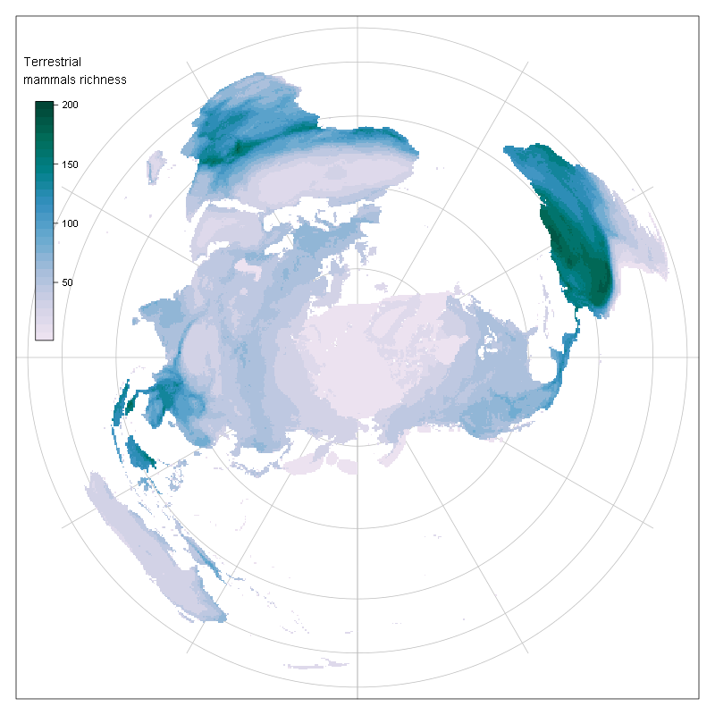
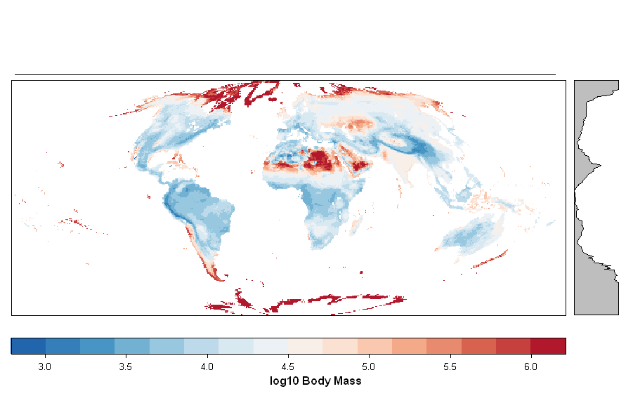
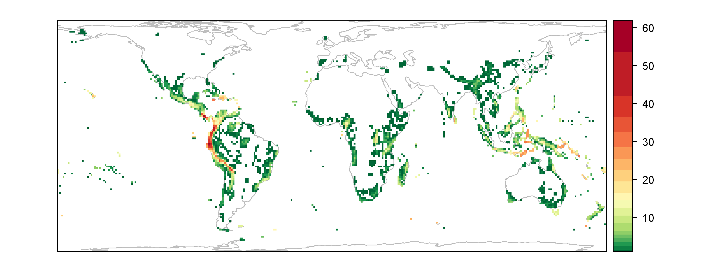
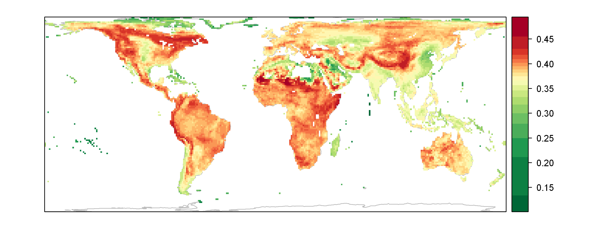
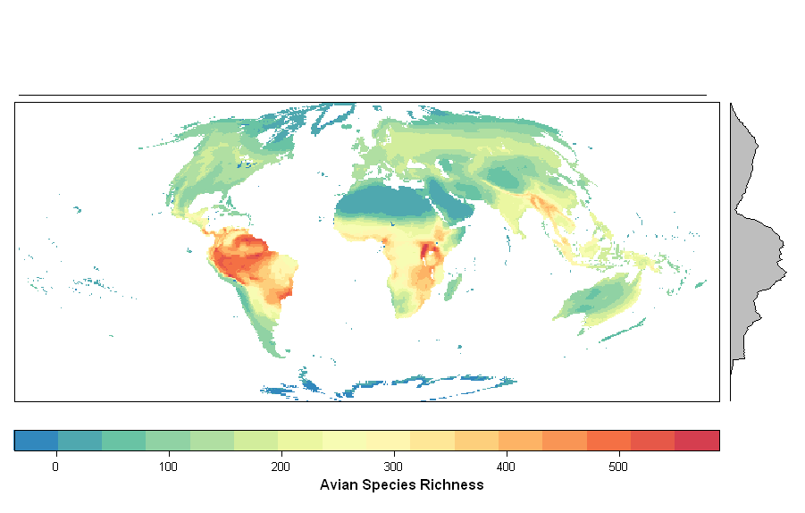

rangeMapper
A platform for the study of macroecology of life history traits
rangeMapper is an R package providing a platform for the study of macroecological patterns of life history traits.
rangeMapper intends to be a front-end package and is built using R's excellent support for both database
(DBI, RSQLite) and spatial classes (sp, raster ).




